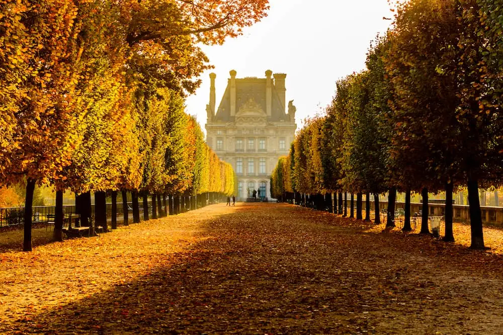
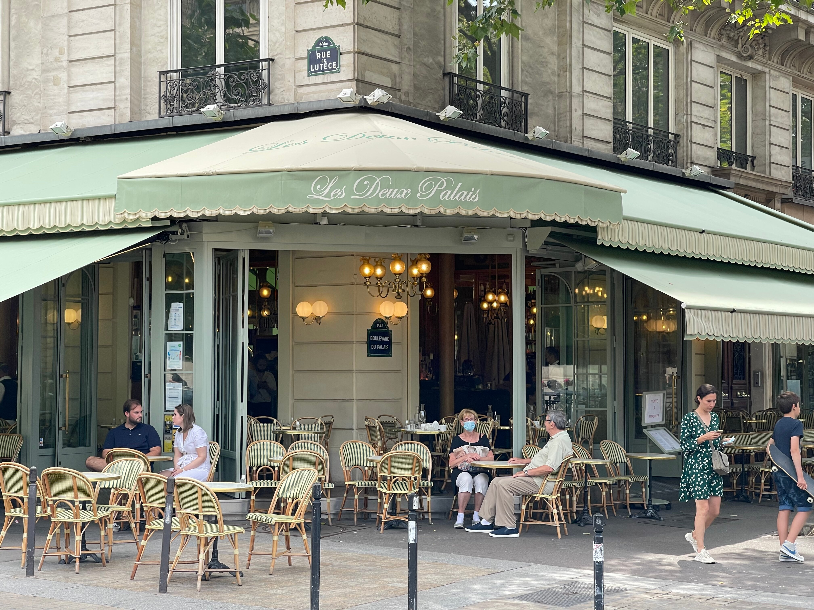
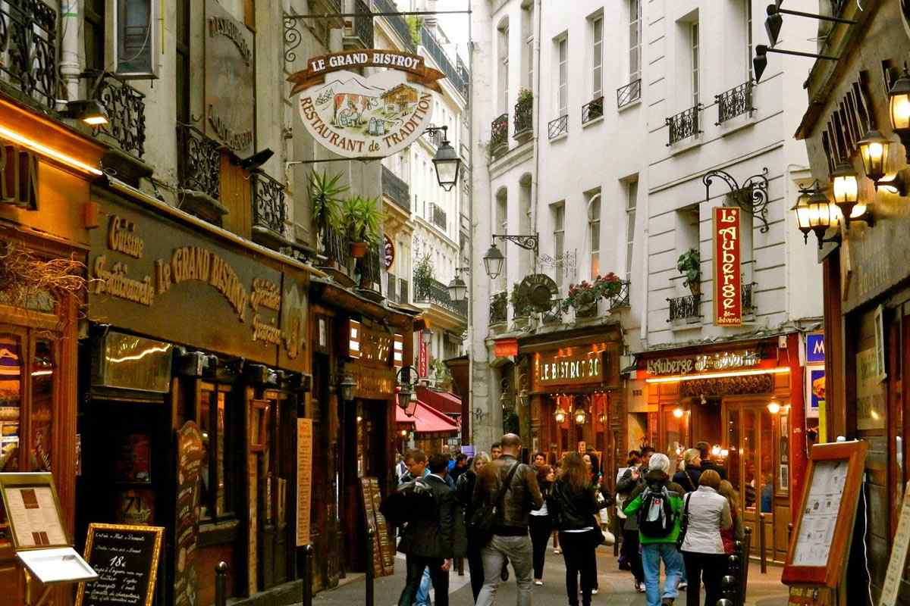
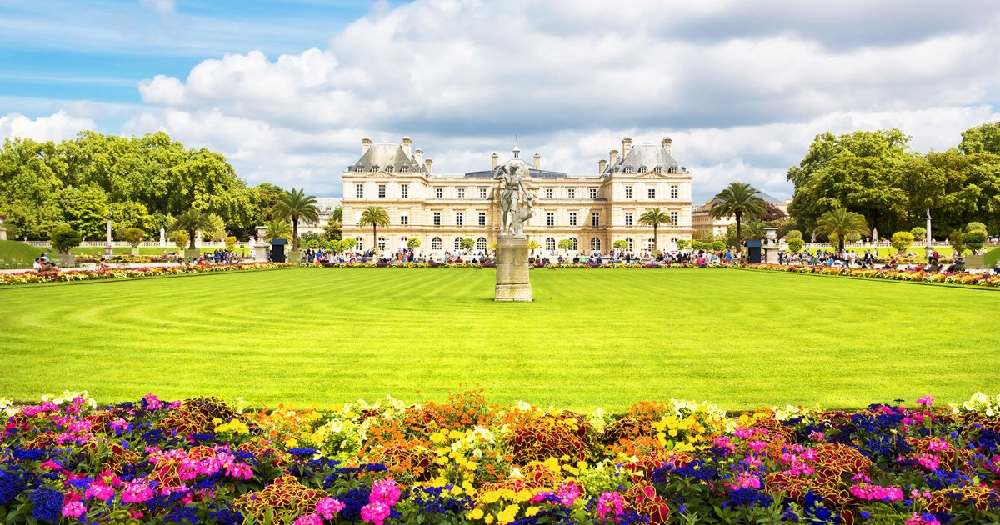
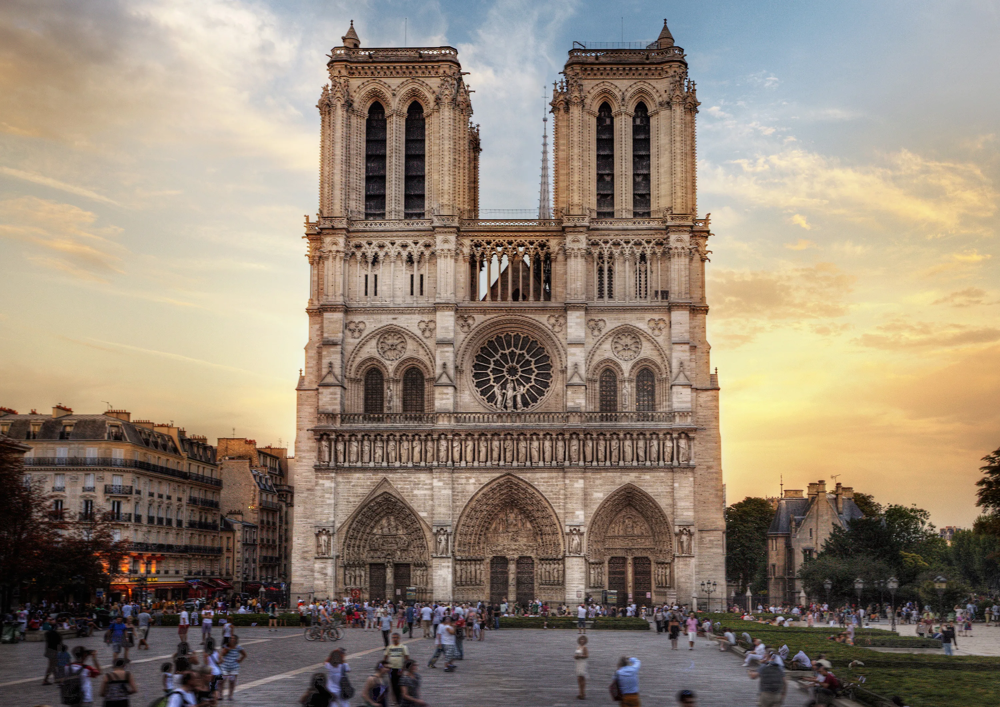
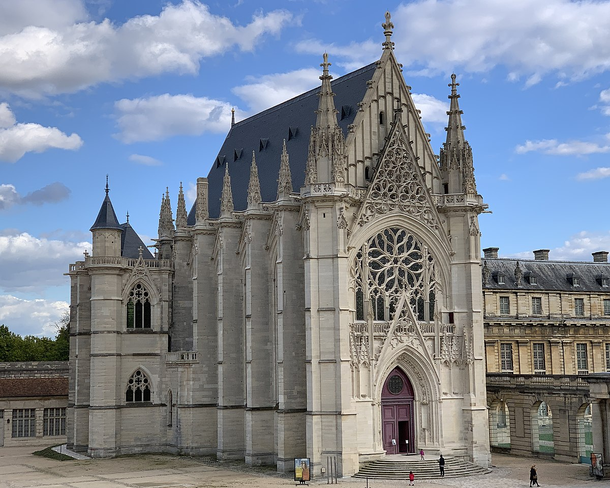
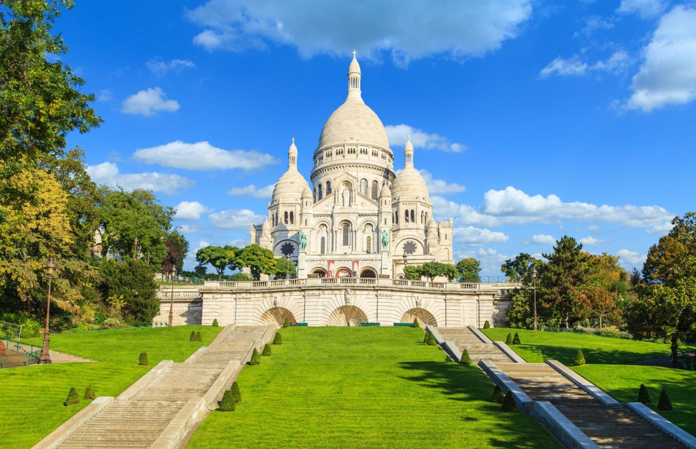

Día 5 - Mañana

Museo del Louvre
Horario: (3 horas):
Dedica tiempo a las obras más famosas, como la Mona Lisa y la Venus de Milo. Reserva entrada anticipada para evitar filas.
Ver en Google Maps

Jardines de las Tullerías
Horario: 30 min
Pasea por este parque junto al Louvre..
Ver en Google MapsDía 5 - Mediodía

Almuerzo cerca de Palais Royal
Horario: ?
Encuentra bistrós o restaurantes en esta zona tranquila y céntrica.
Ver en Google Maps

Barrio Latino
Horario: 1 hora
Explora sus calles bohemias, cafés y librerías como Shakespeare and Companyy.
Ver en Google MapsDía 5 - Tarde Île de la Cité

Jardín de Luxemburgo
Horario: 1 hora
Relájate en estos preciosos jardines, rodeados de estatuas y fuentes.
Ver en Google Maps

Catedral de Notre Dame
Horario: 30 min
Admira su fachada mientras continúa en restauración.
Ver en Google Maps

Sainte-Chapelle
Horario: 1 horaa
Visita esta joya gótica famosa por sus impresionantes vitrales.
Ver en Google MapsDía 4 - Noche

Montmartre y Basílica del Sacré-Cœur
Horario: ?
Sube a la colina para ver París desde arriba y pasea por la Plaza du Tertre. Cena en un restaurante local.
Ver en Google Maps